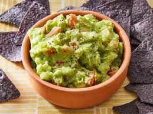

← Back to Recipes
Fresh Guacamole

Description
This fresh and simple guacamole is made with ripe avocados, lime juice, and flavorful additions. It's perfect for dipping, topping tacos, or eating straight off the spoon.
Ingredients
- 3 ripe avocados
- 1 lime, juiced
- 1/2 teaspoon salt
- 1/2 cup diced onion
- 3 tablespoons chopped cilantro
- 2 roma tomatoes, diced
- 1 teaspoon minced garlic
- Pinch of cayenne pepper (optional)
Steps
- Cut the avocados in half, remove the pits, and scoop into a bowl.
- Mash avocados with lime juice and salt to desired texture.
- Stir in onion, cilantro, tomatoes, and garlic.
- Add a pinch of cayenne for heat, if desired.
- Serve immediately, or chill with plastic wrap directly on the surface to prevent browning.